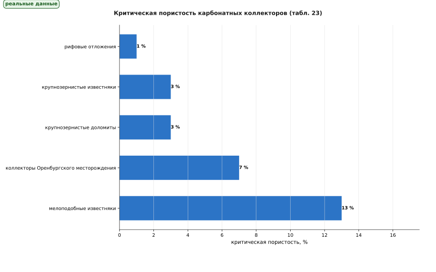

Путь › Карбонатный разрез › Шаг 34 из 34
Свой порог пористости для карбонатов
В книге: «Критическая пористость межзерновых карбонатных коллекторов (пример 55, табл. 23)» стр. 107–108
Опирается на: шаг 33 «Решение на данных: нормализация кривых» (предпосылка), шаг 17 «От дебита к порогу на диаграмме» (предпосылка)
Суть
Граничная пористость карбонатных коллекторов не универсальна: она зависит от структуры пор.
По таблице 23 она меняется от 1 % у рифовых отложений до 13 % у мелоподобных известняков.
Порог, взятый для других отложений, приводит к серьёзным ошибкам в эффективной толщине.
Пороговая идея. Граничная пористость карбонатов не универсальна: она зависит от структуры пор, и чужой порог даёт серьёзные ошибки в эффективной толщине. модель
Как это работает
Порог зависит от пор
Карбонатные коллекторы выделяют по методам пористости, используя критическую пористость — границу между коллектором и неколлектором. Автор делает вывод: она меняется в широких пределах в зависимости от структуры порового пространства. стр. 107
«в зависимости от структуры порового пространства»
Как оценить порог
Критическую пористость можно оценить по зависимости связанной водонасыщенности от пористости. Связанная водонасыщенность — доля пор, занятая неподвижной водой. стр. 107
«можно оценить критическое значение»
Рис. 77 показывает такие кривые для карбонатных коллекторов разных районов. Это рифовые отложения и коллекторы карбона Башкирии, известняки карбона Вуктыла. А также доломиты девона Белоруссии и поровые коллекторы перми Оренбурга. стр. 107
«Кривые зависимости»
«1 – крупнопористые рифовые отложения (Башкирия)»
Пример 55 и таблица 23
В примере 55 критической принимают пористость, при которой связанная водонасыщенность равна 70%. Результаты сводят в таблицу 23. стр. 107
«принимая в качестве»
«Результаты определений оформляем в виде табл. 23.»
Разброс большой: у рифовых отложений критическая пористость 1 %, у мелоподобных известняков — 13 %. Граничная пористость растёт от крупнозернистых коллекторов с большими порами к тонкозернистым с малыми. стр. 107–108
«Мелоподобные известняки (АССР, верхний мел) | 13»
«растет при переходе от крупнозернистых коллекторов с большими порами к тонкозернистым с малыми порами»

Типичное значение
Для большинства межзерновых карбонатных коллекторов крупнейших месторождений СССР граничная пористость — 6-8 %. стр. 107
«заключено в пределах 6-8 %»
Цена ошибки
Правильный выбор критической пористости даёт надёжную эффективную толщину. Автор делает вывод: значение, не соответствующее изучаемым отложениям, приводит к серьёзным погрешностям. стр. 108
«не соответствующего изучаемым отложениям, приводит к серьезным погрешностям»
Не только карбонаты
Нормализация и критическая пористость эффективны не только в карбонатном разрезе. Они работают и в низкопористом слабоглинистом терригенном разрезе. стр. 108
«эффективны не только в карбонатном, но и в низкопористом слабоглинистом терригенном разрезе»
По шагам
Как оценить критическую пористость (пример 55)
- Возьмите зависимость связанной водонасыщенности от пористости для своего типа коллектора. стр. 107
- Найдите пористость, при которой связанная водонасыщенность равна 70%. стр. 107
- Примите её за критическую и используйте для выделения коллекторов и эффективной толщины. стр. 107–108
Разбор примеров из книги
Пример 55. Критическая пористость карбонатных коллекторов стр. 107
Условие. Межзерновые карбонатные коллекторы характеризуются графиками зависимости связанной водонасыщенности от пористости (рис. 77). Критической считать пористость, при которой связанная водонасыщенность равна 70%.
- Для каждой кривой рис. 77 найти пористость, соответствующую связанной водонасыщенности 70%.
- Записать результаты в табл. 23.
Итог. Рифовые отложения (Башкирия, пермь) — 1 %; крупнозернистые известняки (Башкирия, карбон) — 3 %; крупнозернистые доломиты (Белоруссия, девон) — 3 %; коллекторы Оренбургского газового месторождения (пермь) — 7 %; мелоподобные известняки (верхний мел) — 13 %.
Цифры и условия
- Критерий примера 55: связанная водонасыщенность 70%. стр. 107
- Таблица 23: от 1 % (рифовые отложения) до 13 % (мелоподобные известняки). стр. 108
- Типичная граничная пористость крупнейших месторождений СССР — 6-8 %. стр. 107
Таблицы книги
Таблица 23. Значения $k_n^*$ для карбонатных межзерновых коллекторов. стр. 108
| Коллектор | $k_{n_0}^*$ % |
|---|---|
| Рифтовые отложения (Башкирия, пермь) | 1 |
| Крупнозернистые известняки (Башкирия, Карбон) | 3 |
| Крупнозернистые доломиты (Белоруссия, девон) | 3 |
| Коллекторы Оренбургского газового месторождения (пермь) | 7 |
| Мелоподобные известняки (АССР, верхний мел) | 13 |
Исправления распознавания: «Рифтовые отложения» → «Рифовые отложения» (опечатка распознавания; ср. подпись рис. 77 «крупнопористые рифовые отложения»); «Карбон» → «карбон»; заголовок «k_{n_0}^*» → kп* (критическая пористость)
Частая ошибка модель
Ошибка: Порог пористости для коллектора один для всех пород.
На самом деле: Критическая пористость карбонатов — от 1 % до 13 % в зависимости от структуры пор (табл. 23). стр. 107–108
Что это значит для данных модель
Порог пористости — параметр, зависящий от типа коллектора; ошибка в пороге прямо переходит в ошибку эффективной толщины и запасов.
- Вход
- пористость по методам пористости, тип карбонатного коллектора, зависимость связанной воды от пористости
- Выход
- критическая пористость, интервалы коллекторов
- Где ломается
- Порог, взятый с другого типа коллектора, даёт серьёзные погрешности.
- гипотеза Порог стоит выбирать по классу пород (структуре пор), а не задавать глобально для всего месторождения.
Где здесь ручной труд специалиста
- Входные данные
- керн, зависимости связанной воды от пористости
- Ручные шаги
- построение зависимостей, снятие порогов
- Точки суждения
- к какому типу отнести коллектор
- Время
- нужны лабораторные данные
- Типичные ошибки
- использовать чужое значение критической пористости
Аналогия модель
Порог классификации, зависящий от сегмента данных: один глобальный порог даёт систематические ошибки в сегментах.
Где аналогия перестаёт работать: Сегмент (структура пор) не наблюдается напрямую в каротаже — его определяют по керну.
Задачи из книги
- Задача 104. Выделить коллекторы с межзерновой пористостью по диаграммам комплекса методов, приведенным на рис. 63. Нужен рисунок: 63. стр. 108
- Задача 105. Дать заключение об эффективной толщине коллекторов, выделяемых на основании комплекса диаграмм, приведенных на рис. 63, 58. Оценить характер насыщения этих коллекторов. Нужен рисунок: 63, 58. стр. 108
- Задача 106. Дать заключение о наличии карбонатных коллекторов в разрезах скважин, приведенных на диаграммах рис. 14, 53, 68. Нужен рисунок: 14, 53, 68. стр. 108
- Задача 107. На основании диаграмм, приведенных на рис. 76, определить эффективную толщину коллекторов в карбонатном разрезе. Нужен рисунок: 76. стр. 108
- Задача 108. Дать заключение, в каком диапазоне меняется нижний предел пористости карбонатных коллекторов, рассмотренных в задачах 104-107. Сравнить полученные результаты с данными табл. 23. стр. 108
Рисунки книги к этому шагу
- Рис. 77. Рис.77. Кривые зависимости \( k_{n,cn} = f(k_{n}) \) для карбонатных коллекторов разных районов: 1 – крупнопористые рифовые отложения (Башкирия); 2 – крупнопористые коллекторы карбона (Башкирия); 3 – известняки карбона (Вуктыл); 4 – доломиты межсолевых отложений девона (Белоруссия); 5 – поровые коллекторы перми (Оренбург) стр. 107
Рисунки книги в курс не вставляются: смотрите их в книге по номеру страницы; нужные для примеров перерисованы кодом.
Новые понятия
- критическая пористость (porosity cutoff)
- Граничное значение пористости, отделяющее коллектор от неколлектора для данного типа пород. стр. 107 модель
- связанная водонасыщенность (irreducible water saturation)
- Доля пор, занятая связанной (неподвижной) водой. стр. 107 модель
Проверь себя
%
Верный ответ: 70 %
Автор принимает за критическую пористость, при которой связанная водонасыщенность равна 70%. Где это в тексте (стр. 107) →
Расставьте коллекторы из таблицы 23 по росту критической пористости.
Перетащите пункты (мышью или пальцем за ⠿) или двигайте кнопками ↑ ↓.
- Коллекторы Оренбургского газового месторождения
- Мелоподобные известняки
- Рифовые отложения
Верный ответ: Рифовые отложения → Коллекторы Оренбургского газового месторождения → Мелоподобные известняки
1 %, 7 % и 13 %: порог растёт к тонкозернистым породам с малыми порами. Где это в тексте (стр. 108) →
Верный ответ: Она зависит от структуры порового пространства; Она растёт от крупнозернистых пород к тонкозернистым; Неверно выбранное значение даёт серьёзные ошибки в эффективной толщине
По таблице 23 порог меняется от 1 % до 13 %, поэтому универсального значения нет. Где это в тексте (стр. 107) →
Источник
Все утверждения шага с дословной цитатой автора и страницей книги (по PDF).
Критическая пористость карбонатов меняется в широких пределах в зависимости от структуры пор. вывод
«в зависимости от структуры порового пространства»
По зависимости связанной воды от пористости (рис. 77) можно оценить критическую пористость. наблюдение
«можно оценить критическое значение»
В примере 55 критической принимают пористость при связанной водонасыщенности 70%. допущение
«принимая в качестве»
Результаты сведены в табл. 23. наблюдение
«Результаты определений оформляем в виде табл. 23.»
Граничная пористость растёт от крупнозернистых коллекторов с большими порами к тонкозернистым с малыми. вывод
«растет при переходе от крупнозернистых коллекторов с большими порами к тонкозернистым с малыми порами»
Для большинства карбонатных коллекторов крупнейших месторождений СССР типичная граничная пористость — 6-8 %. наблюдение
«заключено в пределах 6-8 %»
Неверно выбранная критическая пористость ведёт к серьёзным ошибкам в эффективной толщине. вывод
«не соответствующего изучаемым отложениям, приводит к серьезным погрешностям»
Нормализация и критическая пористость работают и в низкопористом слабоглинистом терригенном разрезе. наблюдение
«эффективны не только в карбонатном, но и в низкопористом слабоглинистом терригенном разрезе»
Табл. 23: рифовые отложения — 1 %, мелоподобные известняки — 13 %. наблюдение
«Мелоподобные известняки (АССР, верхний мел) | 13»
Рис. 77 — кривые связанной водонасыщенности от пористости для карбонатных коллекторов разных районов. наблюдение
«Кривые зависимости»
Кривые: рифовые отложения и коллекторы карбона Башкирии, известняки карбона Вуктыла, доломиты девона Белоруссии, поровые коллекторы перми Оренбурга. наблюдение
«1 – крупнопористые рифовые отложения (Башкирия)»